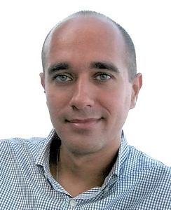

Keynote Speakers
Themis Palpanas
University Paris Cité
 Title: Scalable High-Dimensional Similarity Search: The New Kid on the BlockAbstract: There is an increasingly pressing need, by several applications in diverse domains, for developing techniques able to analyze very large collections of high-dimensional vectors. Examples of such applications come from scientific, manufacturing and social domains, where in several cases they need to apply machine learning techniques for knowledge extraction. It is not unusual for these applications to involve vector collections in the order of hundreds of millions to billions, which are often times not analyzed in their full detail due to their sheer size. In this talk, we describe examples of data sources that produce high-dimensional vectors, and focus on two popular types: data series and deep network embeddings. We discuss the solutions that have been independently developed and are used for each one of these types, and present the surprising results that emerge when we bring these solutions together.
Bio: Themis Palpanas is Senior Member of the French University Institute (IUF), a distinction that recognizes excellence across all academic disciplines, and professor of computer science at the University Paris Cite (France), where he is director of the Data Intelligence Institute of Paris (diiP), and director of the data management group, diNo. He received the BS degree from the National Technical University of Athens, Greece, and the MSc and PhD degrees from the University of Toronto, Canada. He has previously held positions at the University of California at Riverside, University of Trento, and at IBM T.J. Watson Research Center, and visited Microsoft Research, and the IBM Almaden Research Center. His interests include problems related to data science (big data analytics and machine learning applications). He is the author of 9 US patents (3 of which have been implemented in world-leading commercial data management products), and 2 French patents. He is the recipient of 3 Best Paper awards, and the IBM Shared University Research (SUR) Award. He is currently serving on the VLDB Endowment Board of Trustees, as an Associate Editor in the TKDE, and IDA journals, as well as on the Editorial Advisory Board of the IS journal, and the Editorial Board of the TLDKS Journal. He has served as Editor in Chief for the BDR Journal (that he drove to an impact factor of 3.578 and cite score of 8.6), as General Chair for VLDB 2013, Associate Editor for VLDB 2022, 2019 and 2017, Research PC Vice Chair for ICDE 2020, and Workshop Chair for EDBT 2016, ADBIS 2013, and ADBIS 2014, General Chair for the PDA@IOT International Workshop (in conjunction with VLDB 2014), and General Chair for the Event Processing Symposium 2009.
K. Selcuk Candan
Arizona State University
Title: Smart Data Services for Sensemaking in Human-Centered Dynamic SystemsAbstract: Many socio-economical critical human-centered domains (such as sustainability, public health, emergency management) are characterized by highly complex and dynamic systems, requiring data and model driven situational awareness and decision making. Successfully tackling many urgent challenges in these domains requires obtaining a deeper understanding of complex relationships and interactions among a diverse spectrum of entities in different evolving contexts. Models have to be constructed in the presence of sensed data, along with applicable physical models, from multiple sources, often characterized by varying levels of coverage and accuracy. Moreover, both data and models required for the said situational awareness and predictions are defined over high-dimensional and time-varying parameter spaces and require definition of similarity informed with appropriate context. Thus, similarity driven operations in these domains necessitate addressing several major challenges, including latent contexts of impact, heterogeneous networks of entities, dynamicity of impact in varying contexts, and high computational and I/O costs of context-sensitive impact discovery. These algorithms and the novel data platforms they are deployed in need to be efficient and scalable in terms of off-line and on-line running times and their space requirements. In this talk, we will provide several examples from pandemic response and disaster planning, neurology, and resilient buildings and briefly discuss outlines of possible computational approaches to these challenges.
Bio: K. Selcuk Candan is a Professor of Computer Science and Engineering at the Arizona State University, co-Director of ASU's School of Computing and Augmented Systems (SCAI), and the Director of ASU’s Center for Assured and Scalable Data Engineering (CASCADE). He research spans various scalable data and multimedia retrieval challenges and he has published over 180 journal and peer-reviewed conference articles, one book titled "Data Managament for Multimedia Retrieval", and 16 book chapters. He has 9 patents. Prof. Candan served as an associate editor for the Very Large Databases (VLDB) journal, IEEE Transactions on Multimedia, and the Journal of Multimedia. He is currently in the editorial boards of the ACM Transactions on Database Systems, IEEE Transactions on Knowledge and Data Engineering, IEEE Transactions on Cloud Computing. He also serves in the review board of the Proceedings of the VLDB Endowment (PVLDB). He has served in the organization and program committees of various conferences. In 2006, he served as an organization committee member for SIGMOD'06, the flagship database conference of the ACM. In 2008, he served as a PC Chair for another leading, flagship conference of the ACM, this time focusing on multimedia research (MM'08). In 2010, he served as a program committee group leader for ACM SIGMOD’10 and PC Co-Chair for ACM International Conference on Image and Video Retrieval (CIVR) 2010. In 2011, he served as a general co-chair for the ACM MM'11 conference. In 2012 he served as a general co-chair for ACM SIGMOD'12. In 2015, he served as a general co-chair for the IEEE International Conference on Cloud Engineering (I2CE). In 2017, he served as a program chair for the International Conference on Database Systems for Advanced Applications (DASFAA) and in 2019, he served as a program chair for the ACM Int. Conference on Multimedia Retrieval (ICMR). In 2023, he will serve as the PC Chair for ACM SIGMOD Conference. He has successfully served as the PI or co-PI of numerous grants, including from the National Science Foundation, Air Force Office of Research, Army Research Office, Mellon Foundation, Johnson Control, and HP Labs. He also served as a Visiting Research Scientist at NEC Laboratories America for over 10 years. He is a member of the Executive Committee of ACM SIGMOD, a member of the Steering committee for ACM ICMR, and an ACM Distinguished Scientist. You can find more information about his research and an up-to-date resume at kscandan.site.